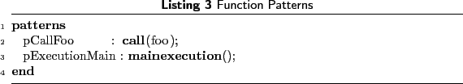

Next: Array Patterns Up: Patterns Previous: Patterns Contents
AspectJ and other aspect-oriented languages provide basic function-related cross-cutting features, which enable a programmer to track, for example, the calls made to all or some specific functions matching the specified pattern. Other places of interest in a function source code are the entry and exit points of the body.
Figure 3 shows an example of the function-related join points
in the source code. The whole body of the function main matches
an pattern, whereas every call to a function is
captured by the  pattern.
pattern.
AspectMatlab also supports both  and
patterns, not only for functions but
to cross-cut scripts as well. Because there is no specific main entry point
to MATLAB programs, so we introduce a
and
patterns, not only for functions but
to cross-cut scripts as well. Because there is no specific main entry point
to MATLAB programs, so we introduce a  pattern.
This pattern will match the execution of the main function or script,
(i.e., the first function or script executed).
The function patterns given in Listing 3 show example uses,
where pCallFoo pattern matches all calls made to
the function or script named foo and pExecutionMain
pattern captures the entry and exit points of the main function.
pattern.
This pattern will match the execution of the main function or script,
(i.e., the first function or script executed).
The function patterns given in Listing 3 show example uses,
where pCallFoo pattern matches all calls made to
the function or script named foo and pExecutionMain
pattern captures the entry and exit points of the main function.
|
 |
Toheed ASLAM 2010-04-24